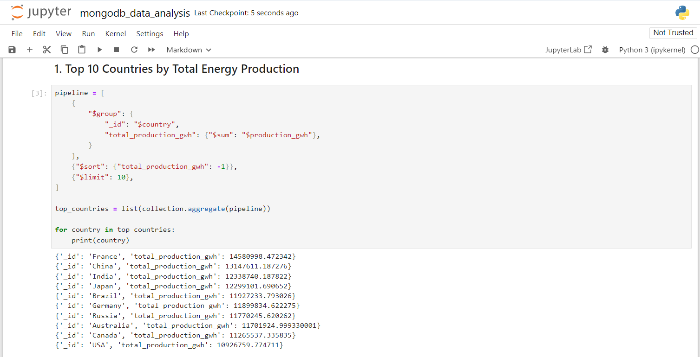
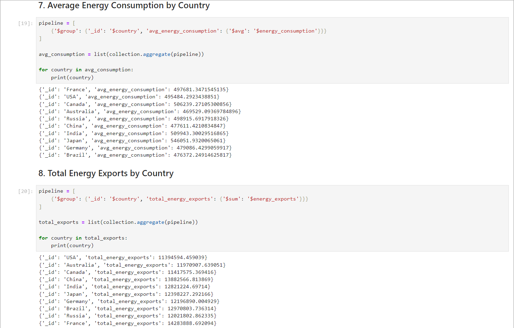
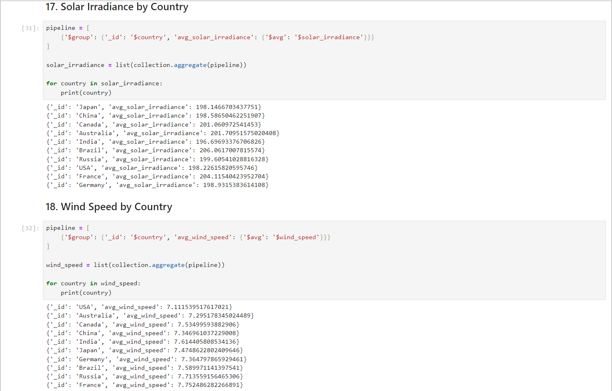

Project Background
The growing focus on renewable energy sources has prompted the need for extensive data analysis to understand trends, investments, and impacts. This project aims to analyze renewable energy data to uncover insights and support decision-making.
Objectives:
Scope:
Methodology:
Key Features:
Dataset
The dataset used for this analysis is a comprehensive collection of renewable energy data, including information on production, investments, capacity, and various other attributes.
The data for this project is sourced from Kaggle (Ref. dataset).
The dataset contains the following columns:
| Sr. No | Attribute | Description |
|---|---|---|
| 1 | country | Name of the country |
| 2 | year | Year of the data record |
| 3 | energy_type | Type of energy (e.g., solar, wind, hydro) |
| 4 | production_gwh | Total energy production in GWh |
| 5 | installed_capacity_mw | Installed capacity in MW |
| 6 | investments_usd | Total investments in USD |
| 7 | population | Population of the country |
| 8 | gdp | Gross Domestic Product of the country |
| 9 | energy_consumption | Energy consumption of the country |
| 10 | energy_exports | Total energy exports |
| 11 | energy_imports | Total energy imports |
| 12 | co2_emissions | Total CO2 emissions |
| 13 | renewable_energy_jobs | Total renewable energy jobs |
| 14 | government_policies | Government policies related to renewable energy |
| 15 | r&d_expenditure | Research and Development expenditure |
| 16 | renewable_energy_targets | Renewable energy targets set by the country |
| 17 | average_annual_temperature | Average annual temperature of the country |
| 18 | annual_rainfall | Annual rainfall in the country |
| 19 | solar_irradiance | Solar irradiance level |
| 20 | wind_speed | Average wind speed |
| 21 | hydro_potential | Total hydro potential |
| 22 | geothermal_potential | Total geothermal potential |
| 23 | biomass_availability | Total biomass availability |
| 24 | energy_storage_capacity | Energy storage capacity |
| 25 | grid_integration_capability | Capability to integrate with the grid |
| 26 | electricity_prices | Electricity prices |
| 27 | energy_subsidies | Energy subsidies provided by the government |
| 28 | international_aid_for_renewables | International aid received for renewable energy projects |
| 29 | public_awareness | Level of public awareness regarding renewable energy |
| 30 | energy_efficiency_programs | Energy efficiency programs implemented |
| 31 | urbanization_rate | Rate of urbanization in the country |
| 32 | industrialization_rate | Rate of industrialization in the country |
| 33 | energy_market_liberalization | Extent of energy market liberalization |
| 34 | renewable_energy_patents | Number of renewable energy patents |
| 35 | educational_level | Educational level of the population |
| 36 | technology_transfer_agreements | Number of technology transfer agreements |
| 37 | renewable_energy_education_programs | Education programs related to renewable energy |
| 38 | local_manufacturing_capacity | Capacity for local manufacturing of renewable energy equipment |
| 39 | import_tariffs_on_energy_equipment | Tariffs on imported energy equipment |
| 40 | export_incentives_for_energy_equipment | Incentives for exporting energy equipment |
| 41 | natural_disasters | Impact of natural disasters on energy production |
| 42 | political_stability | Level of political stability |
| 43 | corruption_perception_index | Corruption perception index |
| 44 | regulatory_quality | Quality of regulatory environment |
| 45 | rule_of_law | Adherence to rule of law |
| 46 | control_of_corruption | Control of corruption |
| 47 | economic_freedom_index | Economic freedom index |
| 48 | ease_of_doing_business | Ease of doing business index |
| 49 | innovation_index | Innovation index |
| 50 | number_of_research_institutions | Number of research institutions |
| 51 | number_of_renewable_energy_conferences | Number of renewable energy conferences |
| 52 | number_of_renewable_energy_publications | Number of renewable energy publications |
| 53 | energy_sector_workforce | Total workforce in the energy sector |
| 54 | proportion_of_energy_from_renewables | Proportion of energy from renewable sources |
| 55 | public_private_partnerships_in_energy | Public-private partnerships in energy sector |
| 56 | regional_renewable_energy_cooperation | Regional cooperation on renewable energy projects |
Conclusion
Summarize the insights gained from the analysis. Discuss how these insights can be used for decision-making in renewable energy projects.
Snapshots

